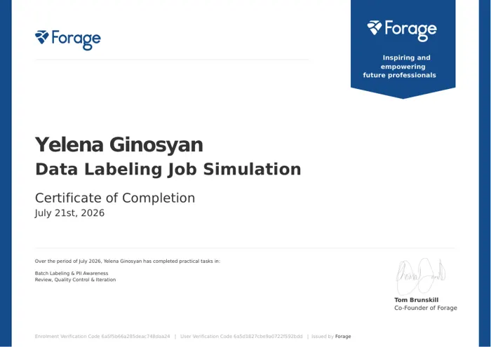

DATA OPERATIONS↗

FORAGE
Data Labeling
VERIFIED DOCUMENT2026
WHAT THIS REPRESENTS
In this Forage job simulation, I completed batch data-labelling tasks while considering how personally identifiable information should be handled. I then reviewed labelled outputs, checked their consistency and iterated on the results. The exercise reinforced why reliable analysis starts with careful preparation, clear labelling rules and quality control.
HIGHLIGHTS
Certificate ↗Batch labellingPII awarenessQuality control